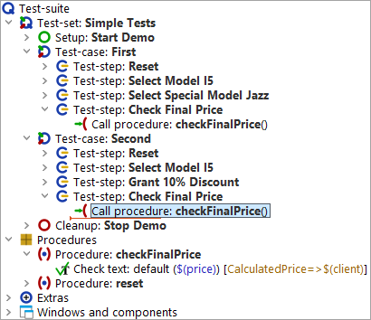
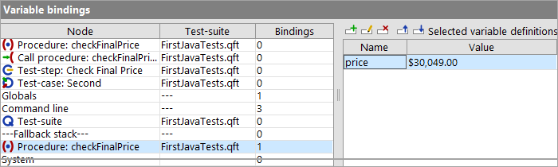
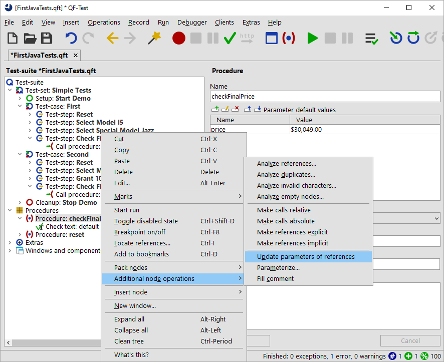

| Version 6.0.3 |
The next step is to make use of the procedure call in the second test-case as well.
|
|  | ||
|
| Figure 6.5: Second procedure calls 'checkFinalPrice' | ||
Note If you added the procedure call by a copy or drag and drop operation from the procedure itself you will find the price in the Variable definitions table of the procedure call. This is what we are eventually aiming at. However, at this stage we want to explain the default value. So, if you want to follow the tutorial exactly, please delete the default value by pressing the red X above the table.
An error message shows up indicating different values for the price expected and the price got. What went wrong? Let's go hunting. Typically we use the run-log for this but there is another view worth to know of.
In debugging mode you will find an additional bottom right section of the QF-Test window showing a list of nodes with variables bound to those nodes.
|
|  | ||
|
| Figure 6.6: Variable bindings | ||
The variable bindings table is very useful for debugging. It comes in quite handy, too, when working with procedures and trying to understand the way QF-Test figures out which variable value to use. It shows the current values of the variables.
Note QF-Test always checks the variable bindings table from top to bottom.
You can see that the first rows of the table have no bindings at all. Then there is a binding at the level 'Globals' and another one in the fallback stack for the procedure 'checkFinalPrice'. The global variable is used for the client connection, which has been set when starting the application (cf Starting the Application). The other variable is more interesting to us - only it has the wrong value.
The default value is intended to be used for the parameter if no value has been defined elsewhere. This is why we added the parameter to the 'Parameter default values' table of the procedure node.
To do things correctly we need to pass the proper value when calling the procedure. Again, there are several ways to do it. One is to add a new row to the variable definitions table of the 'Call procedure' nodes similarly to the way you did at the 'Procedure' node in the last section.
If the procedure is called multiple times within the test suite, there is a better way:
|
|  | ||
|
| Figure 6.7: Popup menu for 'Additional node operations' | ||
In the 'Call procedure' nodes QF-Test adds a row each for every default parameter to the variable definition table of the procedure call . It also copies
the default value of each default parameter. In our case it is
the parameter price with the value $30,049.00.
You might notice that the numerical value of the price variable is still wrong in the second case, regardless of whether it is defined implicitly as a default value or explicitly via a parameter. For now we want to keep that error to show you additional means of debugging.
| Last update: 9/6/2022 Copyright © 2002-2022 Quality First Software GmbH |